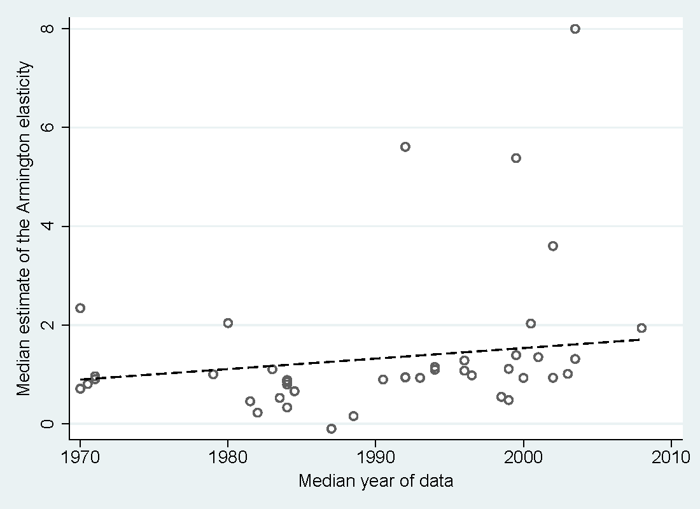

Abstract
A key parameter in international economics is the elasticity of substitution between domestic and foreign goods, also called the Armington elasticity. Yet estimates vary widely. We collect 3,524 reported estimates of the elasticity, construct 32 variables that reflect the context in which researchers obtain their estimates, and examine what drives the heterogeneity in the results. To account for model uncertainty, we employ Bayesian and frequentist model averaging. To correct for publication bias, we use newly developed non-linear techniques. Our main results are threefold. First, there is publication bias against small and statistically insignificant elasticities. Second, differences in results are best explained by differences in data: aggregation, frequency, size, and dimension. Third, the elasticity implied by the literature after accounting for both publication bias and study quality lies in the range 2.5--5.1 with a median of 3.8.
Fig: The mean and variance of reported elasticities increase over time
Reference: Josef Bajzik, Tomas Havranek, Zuzana Irsova, and Jiri Schwarz (2020), "Estimating the Armington Elasticity: The Importance of Study Design and Publication Bias." Journal of International Economics 127, 103383.